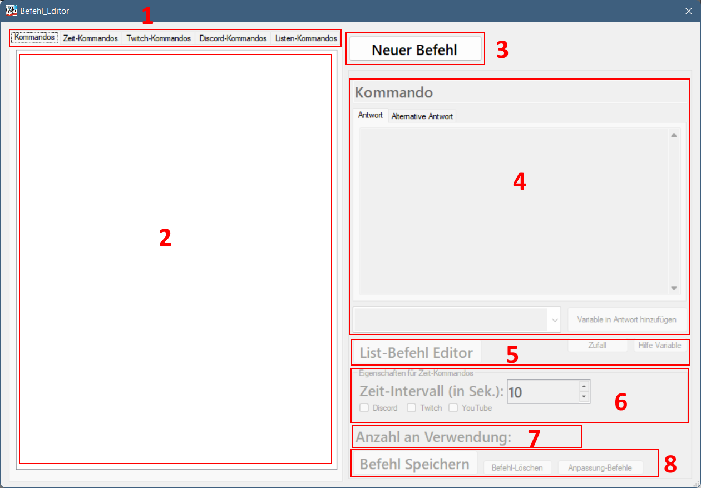

-
Unterscheidung der Kommandoarten:
- Kommandos: Kommandos, die auf allen Platformen genutzt werden können
- Zeit-Kommandos: Kommandos, die automatisch nach einer eingestellten Zeit gesendet werden. In Verbindung mit 6 verwenden
- Twitch-Kommandos: Kommandos, die nur auf Twitch verwendet werden können. Besitzen eigene Variablen
- Discord-Kommandos: Kommandos, die nur auf Discord verwendet werden können. Besitzen eigene Variablen
- Listen-Kommandos: Kommandos, die eine Liste von Einträgen enthält, die mit weitern Kommandos befüllt und geleert werden können. In Verbindung mit 5 verwenden.
-
Liste der Kommandos der jeweiligen Kommandoarten
-
Button zum Anlegen eines neuen Befehls
-
Der Text, der vom Kommando ausgegeben wird. Standarmäßig wird nur eine Antwort versendet. Über das Drag-Down-Menü und den Button "Variable in Antwort einfügen" können Variablen eingefügt werden. Bei einigen Variablen wird eine Alternative Antwort erwartet. Diese kann im Reiter "Alternative Antwort" hinterlegt werden.
-
Zusätzliche Buttons, für weitere Funktionen:
- List-Befehl Editor: Aufruf des Editor für die Listen-Kommandos. Da mehrere Befehle benötigt werden, exisitert hier ein extra Editor
- Zufall: Aufruf des Editors für Zufalleinträge. Es können mehrere Einträge für eine Zufallsvariable hinterlegt werden
- Hilfe Variable: Aufruf der Hilfeseiten für die Variablen
-
Einstellungen für die Zeit-Kommandos. Der Intervall muss mind. 10 Sekunden betragen. Der Ort an dem die Nachricht gesendet wird, kann ausgewählt ausgewählt.
-
Die Anzahl, die ein Kommando verwendet wurde
-
Zusätzliche Buttons zum Speichern, Löschen von Befehlen. Mit den Button "Anpassung Befehle", können die Befehle angepasst werden, falls zwischen Versionen neue Felder hinzugekommen sind.